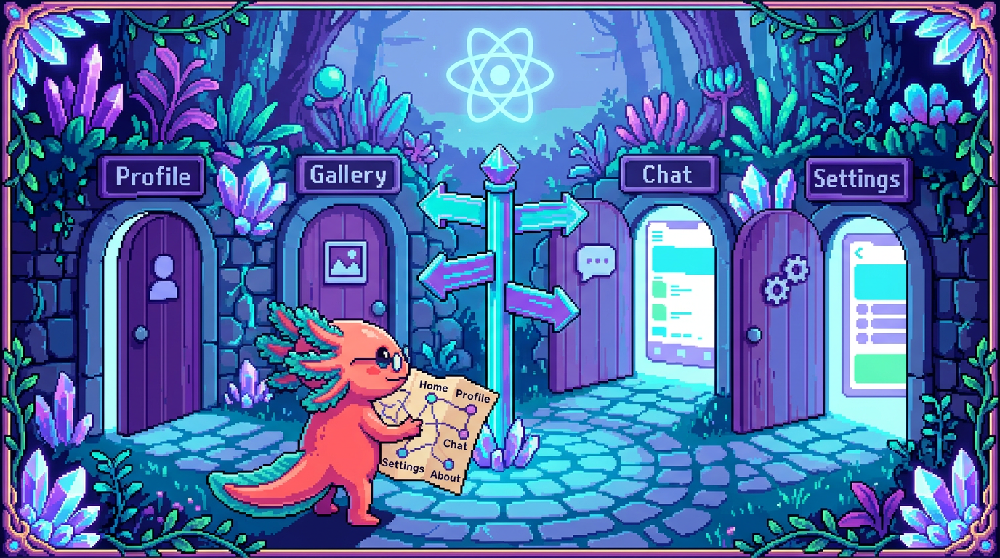

Capitulo 13 — Rutas y estructura de una app

Hasta ahora tus componentes cabian en una sola pantalla: un
Appcon su estado, sus listas y sus formularios. Pero una app de verdad casi nunca se queda ahi. Tiene una pantalla de inicio, otra de login, otra para ver el detalle de algo concreto. La pregunta es: ¿como saltas de una a otra sin que el navegador recargue toda la pagina? De eso trata el enrutado (routing), y es lo que vamos a ver aqui. Bit, nuestro ajolote, ya saco su mapa y cerro un ojo de pura concentracion: vamos a recorrer las dos formas mas comunes de organizar una app React, apoyandonos en dos proyectos reales. Por un lado RachaSimple, una app de habitos con Vite + React Router; por otro Faro, un organizador de proyectos con Next.js. La misma idea de fondo, servida de dos maneras distintas.
1. ¿Que problema resuelve el enrutado?
Piensa en cualquier web. Escribes racha.app/today y aparecen tus habitos del dia. Tocas uno y la barra de direcciones pasa a racha.app/habit/42: ahora estas en el detalle de ese habito. Pulsas el boton de atras del navegador y vuelves a la lista. Todo eso —que cada pantalla tenga su URL, que el boton de atras funcione, que los enlaces lleven donde deben— es trabajo del enrutado.
🟦 ¿Que significa? — Enrutado (routing)
Es el mecanismo que decide que pantalla mostrar segun la URL (la direccion que ves en la barra del navegador). Gracias a el, tu app tiene varias "paginas" que el usuario puede visitar, guardar en favoritos y compartir por enlace. En una SPA (aplicacion de una sola pagina), el navegador no recarga nada de cero: el enrutado va intercambiando los componentes en pantalla sobre la marcha. En RachaSimple ese trabajo lo hace React Router; en Faro lo da Next.js.
🟦 ¿Que significa? — URL y ruta (path)
La URL es la direccion completa (
https://racha.app/habit/42). La ruta o path es solo el trozo que va despues del dominio (/habit/42). El enrutado se fija en esa ruta para elegir que componente mostrar. Si la URL es la direccion de una casa, la ruta es el "calle y numero" dentro de tu ciudad.💡 Tip
Antes de React, cada URL distinta pedia al servidor un archivo HTML distinto: recarga completa y un parpadeo en blanco entre pantalla y pantalla. El enrutado moderno hace que cambiar de pantalla se sienta instantaneo, porque solo intercambia componentes en JavaScript en vez de volver a pedir la pagina entera.
2. Paginas vs componentes de UI
Hay una distincion que al principio lia a casi todo el mundo, asi que Bit la senala con su patita: no todo componente es una pagina.
🟦 ¿Que significa? — Componente de pagina
Es el componente que representa una pantalla completa, esa a la que llegas escribiendo (o pulsando) una URL. Suele ocupar todo el espacio, decide que datos cargar y monta la estructura general de la vista. En RachaSimple cada pantalla vive en
src/pages/:Today.tsx,HabitDetail.tsx,Settings.tsx,Login.tsx. Cada uno es "una pagina".🟦 ¿Que significa? — Componente de UI (interfaz)
Es una pieza reutilizable que no es una pantalla, sino un trozo visual que vive dentro de las paginas: un boton, una tarjeta, una cabecera. En RachaSimple estan en
src/components/: por ejemploHabitCard.tsx(la tarjeta de un habito) oPageHeader.tsx(la cabecera). En Faro estan tambien ensrc/components/:project-card.tsx,phase-badge.tsx,sign-out-button.tsx.
La regla mental cabe en dos preguntas:
- ¿Le llego por una URL? Es una pagina.
- ¿Lo uso dentro de varias paginas? Es un componente de UI.
Por ejemplo, en RachaSimple la pagina Today.tsx renderiza una lista con muchos HabitCard. La pagina lleva la batuta; las piezas de UI obedecen y reciben sus datos por props (lo viste en el Capitulo 3).
🔎 En tu codigo
Echa un ojo a
src/pages/Today.tsxde RachaSimple: arriba del todo importaLinkde React Router yHabitCardde componentes. La pagina coordina; la tarjeta se limita a pintar un habito. Esa separacion (una carpetapages/aparte decomponents/) no es adorno: de un vistazo te dice que cosa es navegable y que cosa es una pieza reutilizable.⚠️ Cuidado
No metas la logica de "que pantalla mostrar" dentro de un boton o una tarjeta. Una tarjeta no tiene por que saber a que URL pertenece la app entera; lo unico que deberia hacer es avisar "me hicieron clic" (mediante una funcion que recibe por props) y dejar que la pagina decida que pasa despues. Si mezclas las dos cosas, tus componentes de UI dejan de servir para reutilizarse.
3. RachaSimple: enrutado con React Router
RachaSimple esta construida con Vite (la herramienta que empaqueta y sirve el proyecto) y usa React Router para el enrutado. Veamos como encaja cada pieza.
🟦 ¿Que significa? — Vite
Es una herramienta de desarrollo que arranca tu app React en segundos y la prepara para produccion. Cuando ejecutas
npm run deven RachaSimple, es Vite quien levanta el servidor local. No se mete con las rutas: solo construye y sirve la app. El enrutado lo pones tu por encima, con React Router.🟦 ¿Que significa? — React Router
Es una libreria que le anade enrutado a una app React. Tu le declaras, en codigo, "esta ruta muestra este componente", y ella se encarga de cambiar de pantalla cuando la URL cambia. En RachaSimple es el paquete
react-router-dom(version 6), que aparece en supackage.json.
El corazon de todo esta en src/App.tsx. La app envuelve todo con un BrowserRouter y, dentro, declara las rutas con Routes y Route:
import { BrowserRouter, Navigate, Route, Routes } from 'react-router-dom';
import { LandingPage } from '@/pages/Landing';
import { LoginPage } from '@/pages/Login';
import { TodayPage } from '@/pages/Today';
import { CreateHabitPage } from '@/pages/CreateHabit';
function AppRoutes() {
return (
<Routes>
<Route path="/" element={<LandingPage />} />
<Route path="/login" element={<LoginPage />} />
<Route path="/today" element={<TodayPage />} />
<Route path="/create-habit" element={<CreateHabitPage />} />
<Route path="/habit/:id" element={<HabitDetailPage />} />
</Routes>
);
}
Cada Route se lee como una frase: "cuando la ruta sea /today, muestra el elemento <TodayPage />". Es un mapa explicito: tu, como programador, escribes a mano la correspondencia entre cada URL y su componente.
🟦 ¿Que significa? —
<Routes>y<Route>
<Routes>es la caja que guarda todas tus rutas posibles; mira la URL actual y se queda con una sola<Route>, la que encaja. Cada<Route>empareja unpath(la ruta) con unelement(el componente de pagina que toca mostrar). Entre todas dibujan el mapa completo de pantallas de la app.🟦 ¿Que significa? —
<BrowserRouter>Es el componente que envuelve toda la app y conecta React Router con la barra de direcciones de verdad del navegador (la "Browser URL"). Sin el,
<Routes>no tendria forma de saber que URL esta activa. Va una sola vez, bien arriba del arbol. En RachaSimple envuelve aAppRoutes.
Ruta dinamica: /habit/:id
Fijate en path="/habit/:id". Esos dos puntos delante de id quieren decir "aqui va un valor variable". Tanto /habit/42 como /habit/7 casan con esa ruta; lo unico que cambia es el id.
🟦 ¿Que significa? — Ruta dinamica y parametro
Es una ruta con un hueco variable, que se escribe como
:nombre. El valor que entra por ese hueco es el parametro. En RachaSimple,/habit/:idpermite que una misma pagina de detalle valga para cualquier habito; elides lo que distingue de cual hablamos. Asi te ahorras escribir una ruta por cada elemento (que seria, sencillamente, imposible).
Dentro de la pagina de detalle, lees ese parametro con el hook useParams:
import { useParams } from 'react-router-dom';
export function HabitDetailPage() {
const { id } = useParams(); // "42" si la URL es /habit/42
// ...usas ese id para cargar el habito correcto
}
🟦 ¿Que significa? —
useParamsEs un hook de React Router que te devuelve los parametros de la ruta actual (esos huecos
:nombreque declaraste en elpath). Lo llamas dentro de la pagina y te entrega un objeto: si la ruta es/habit/:idy la URL es/habit/42,const { id } = useParams()te daid = "42". Es lo que permite que la pagina de detalle sepa cual elemento mostrar. En Faro no hace falta: alli el parametro llega por la propparams(sin hook), porque la pagina corre en el servidor.
Navegar entre paginas: Link y useNavigate
Para que el usuario salte de una pagina a otra hay dos caminos, y RachaSimple usa los dos.
🟦 ¿Que significa? —
<Link>Es el componente que sustituye al
<a href>de HTML cuando estas dentro de una app con React Router. Crea un enlace que cambia la pantalla sin recargar toda la pagina. Ensrc/pages/Today.tsx, RachaSimple lo usa asi:<Link to="/create-habit">, para llevar al usuario a crear un habito nuevo.
import { Link } from 'react-router-dom';
// Dentro de Today.tsx:
<Link to="/create-habit">Crear habito</Link>
🟦 ¿Que significa? —
useNavigateEs un hook que te devuelve una funcion para cambiar de pagina desde el codigo, no desde un clic en un enlace. Viene bien cuando navegas como consecuencia de algo: "termine de guardar, ahora llevame a
/today". Se usa asi:const navigate = useNavigate();y luegonavigate('/today');.💡 Tip
Usa
<Link>cuando es el usuario quien decide ir (un menu, un boton de "ver detalle"). UsauseNavigatecuando es el codigo el que decide ir (despues de guardar un formulario, tras un login correcto). Los dos evitan la recarga completa; la diferencia esta en quien dispara la navegacion.
Rutas protegidas
RachaSimple tiene pantallas que solo deberian ver los usuarios con sesion iniciada. Lo resuelve con un componente que hace de envoltorio:
function ProtectedRoute({ children }: { children: ReactNode }) {
const { user, loading } = useAuth();
if (loading) return <LoadingScreen />;
if (!user) return <Navigate to="/login" replace />;
return <>{children}</>;
}
🟦 ¿Que significa? — Ruta protegida
Es una pantalla que solo aparece si se cumple una condicion (lo habitual: que haya un usuario con sesion). Si no se cumple, se redirige a otra ruta. En RachaSimple,
ProtectedRouteconsultausercon el hookuseAuthy, si no hay nadie, devuelve<Navigate to="/login" />para mandar al login.🟦 ¿Que significa? —
<Navigate>y redirigirRedirigir es enviar al usuario a otra ruta de forma automatica, sin que tenga que hacer clic.
<Navigate to="/login" replace />hace exactamente eso en cuanto se renderiza. Elreplaceevita que la pantalla anterior quede en el historial, asi el boton "atras" no lo devuelve a una pagina que no deberia ver.🔎 En tu codigo
En
App.tsxde RachaSimple veras varias rutas envueltas en<ProtectedRoute>...</ProtectedRoute>:/today,/create-habit,/onboarding, etc. En cambio/,/login,/privacidady/terminosquedan publicas, fuera del envoltorio. Esa lista te dice de un solo vistazo que parte de la app exige tener sesion.
4. Faro: enrutado por archivos con Next.js
Faro es otro proyecto y juega con otras reglas. No usa React Router: usa Next.js con su App Router, donde las carpetas y los archivos SON las rutas. Aqui no hay un App.tsx con una lista de <Route>. La estructura de carpetas es el mapa.
🟦 ¿Que significa? — Next.js
Es un framework (un conjunto de herramientas y reglas) construido sobre React. Trae enrutado, renderizado en el servidor y bastante mas, todo integrado de fabrica. Faro usa Next.js 15 con React 19. A diferencia de Vite + React Router (donde vas juntando tu las piezas), Next.js viene con muchas decisiones ya tomadas.
🟦 ¿Que significa? — Enrutado por archivos (file-based routing)
Es el enfoque en el que la ubicacion de cada archivo en el disco define su URL, sin que escribas un mapa de rutas a mano. En el App Router de Next.js, una carpeta dentro de
src/app/es una ruta, y el archivopage.tsxque contiene es la pantalla de esa ruta. La carpeta, basicamente, es la URL.
Mira la estructura real de src/app/ en Faro:
src/app/
page.tsx -> / (pagina de inicio)
login/page.tsx -> /login
dashboard/page.tsx -> /dashboard
agenda/page.tsx -> /agenda
projects/page.tsx -> /projects
projects/new/page.tsx -> /projects/new
projects/[id]/page.tsx -> /projects/42 (ruta dinamica)
layout.tsx -> envoltura comun de todas
¿Ves el patron? No hay declaracion de rutas por ningun lado. Si quieres una pantalla en /agenda, creas src/app/agenda/page.tsx y ya esta: esa URL existe.
🟦 ¿Que significa? —
page.tsxEs el nombre de archivo que Next.js reserva para "la pantalla de esta carpeta". Si una carpeta tiene un
page.tsx, esa carpeta es navegable como URL.src/app/dashboard/page.tsxexporta por defecto un componente, y ese componente es lo que se ve en/dashboard.🟦 ¿Que significa? — Ruta dinamica en Next.js (
[id])Es el equivalente del
:idde React Router, pero con corchetes en el nombre de la carpeta:projects/[id]. La carpeta[id]casa con cualquier valor (/projects/42,/projects/abc). Faro la usa para mostrar el detalle de cualquier proyecto con una sola plantilla.
En Faro, la pagina de detalle recibe ese parametro por props, no con un hook:
export default async function ProjectDetailPage({
params,
}: {
params: Promise<{ id: string }>;
}) {
const { id } = await params; // el "42" de /projects/42
const project = await getProject(id);
if (!project) notFound();
// ...
}
💡 Tip
¿Te llamaron la atencion el
asyncy elawait params? En el App Router de Next.js, unapage.tsxpuede ser un componente de servidor: se ejecuta en el servidor antes de llegar al navegador, y por eso puede usarawaitpara pedir datos directamente. En RachaSimple (que corre todo en el navegador) esto no ocurre: alli los datos se cargan con hooks comouseEffecto TanStack Query (Capitulos 8 y 11).🟦 ¿Que significa? —
layout.tsxEs un archivo especial de Next.js que define la envoltura comun de las paginas: lo que se repite en todas (el
<html>, la fuente, una barra de navegacion). Elsrc/app/layout.tsxde Faro fijalang="es", carga las fuentes de marca y mete{children}(la pagina actual) dentro del<body>. Es el primo, en version Next.js, delAppShellque RachaSimple coloca alrededor de sus<Routes>.
Navegar en Faro: Link de next/link
Para enlazar entre pantallas, Faro tambien usa un componente Link, pero importado de Next.js:
import Link from "next/link";
// Dentro de dashboard/page.tsx:
<Link href="/projects/new">Nuevo proyecto</Link>
⚠️ Cuidado
Los dos
Linkse llaman igual, pero no son intercambiables. El de React Router usa la propto="/ruta"y se importa dereact-router-dom. El de Next.js usahref="/ruta"y se importa denext/link. Si copias codigo de un proyecto al otro sin cambiar el import y la prop, te saltara un error. Bit ya cayo en esa una vez y se le pusieron las branquias rosas de la verguenza.🔎 En tu codigo
En
dashboard/page.tsxde Faro verasimport Link from "next/link"y, ademas,redirect("/login")denext/navigation. Eseredirectes el equivalente del<Navigate>de RachaSimple: si no hay usuario, Next.js manda al login desde el servidor. Misma idea de "ruta protegida", herramienta distinta.
5. RachaSimple vs Faro: la misma idea, dos caminos
Pongamos las dos formas una al lado de la otra para que se quede grabado.
| Tema | RachaSimple (Vite + React Router) | Faro (Next.js App Router) |
|---|---|---|
| Donde se declaran las rutas | A mano, en src/App.tsx con <Route> |
Por carpetas dentro de src/app/ |
| Una pantalla nueva | Añades un <Route> y un componente |
Creas una carpeta con page.tsx |
| Ruta dinamica | path="/habit/:id" + useParams() |
carpeta [id] + prop params |
| Enlace de navegacion | <Link to="..."> de react-router-dom |
<Link href="..."> de next/link |
| Navegar desde codigo | useNavigate() |
redirect() / useRouter() |
| Envoltura comun | Componente AppShell alrededor de <Routes> |
Archivo layout.tsx |
| Donde corre | Todo en el navegador (SPA) | Servidor + navegador |
💡 Tip
No hay un ganador absoluto. React Router te da control explicito y resulta comodo para apps que viven solo en el navegador, como RachaSimple. Next.js te ahorra escribir el mapa de rutas y deja correr codigo en el servidor (algo muy util para Faro, que habla con GitHub, Drive y OpenAI usando secretos que no deben llegar nunca al navegador). Elige segun lo que pida cada app.
6. Como organizar las carpetas de una app React
Mas alla del enrutado, una app crece y necesita orden. A Bit el desorden lo saca de quicio (una vez perdio una semilla de calabaza entre sus archivos y aun no se lo perdona). Estas son las carpetas que te vas a encontrar en proyectos reales.
🟦 ¿Que significa? — Estructura de carpetas por responsabilidad
Es agrupar los archivos segun lo que hacen, no al tuntun. Cada carpeta tiene un papel claro, de modo que cualquiera (tu mismo dentro de tres meses, sin ir mas lejos) encuentra las cosas rapido.
Asi se reparte RachaSimple dentro de src/:
src/
pages/ # pantallas navegables (Today, HabitDetail, Settings...)
components/ # piezas de UI reutilizables (HabitCard, PageHeader...)
hooks/ # hooks propios (Capitulo 9)
lib/ # utilidades y config (supabase, query-client...)
auth/ # todo lo de sesion (AuthProvider, useAuth)
i18n/ # textos en varios idiomas
types/ # tipos de TypeScript (Capitulo 5)
App.tsx # el mapa de rutas
main.tsx # el punto de arranque
Y Faro, con Next.js, dentro de src/:
src/
app/ # rutas (carpetas con page.tsx) + api/
components/ # piezas de UI (project-card, phase-badge...)
lib/ # queries, conexiones, cliente de supabase
middleware.ts # codigo que corre antes de cada peticion
🟦 ¿Que significa? — Punto de arranque (entry point)
Es el archivo donde la app empieza a vivir. En RachaSimple es
src/main.tsx: conReactDOM.createRoot(...).render(<App />)engancha tu arbol de componentes a la pagina HTML. En Next.js no escribes este archivo: el framework se encarga por ti.🔎 En tu codigo
Abre
src/main.tsxde RachaSimple. Veras que<App />va envuelto en<React.StrictMode>, un modo que React activa en desarrollo para avisarte de codigo sospechoso. Es la primera linea de toda la app: de aqui cuelga absolutamente todo lo demas.💡 Tip
Tunal Digital, en cambio, es un sitio en HTML/CSS/JS vanilla: cada pagina ES un archivo
.htmlde verdad, sin React ni enrutado de SPA. Y PolyPaw esta hecho en Python con Flet, que es otra cosa por completo. Por eso en este modulo solo sacamos ejemplos de React de RachaSimple y Faro: son los unicos dos proyectos donde el enrutado de React aplica.⚠️ Cuidado
No crees una carpeta nueva por cada componente solo "por si acaso". Arranca simple (
pages/ycomponents/) y separa mas cuando una carpeta empiece a crecer de verdad. Sobre-organizar al principio te hace perder mas tiempo del que ahorras. Deja que la estructura crezca con la app, no por delante de ella.
7. Juntando las piezas: el recorrido de un clic
Para cerrar, sigamos un clic de principio a fin en RachaSimple, que ya conoces:
- El usuario esta en
/today(paginaToday.tsx), viendo susHabitCard. - Hace clic en
<Link to="/create-habit">. React Router cambia la URL sin recargar. <Routes>detecta la nueva ruta y monta<CreateHabitPage />.- Pero esa ruta esta dentro de
<ProtectedRoute>: se compruebauser. Hay sesion, asi que pasa. - El usuario llena el formulario y guarda. El codigo llama a
navigate('/today'). - Vuelve a
/today, ahora con un habito mas en la lista.
En Faro el guion es parecido, pero el paso 3 lo decide la carpeta (projects/new/page.tsx) en lugar de un <Route>, y el paso 4 (la proteccion) ocurre en el servidor con redirect("/login"). La misma pelicula, con otro reparto.
💡 Tip
Si entiendes este recorrido, entiendes el enrutado. Todo lo demas (rutas anidadas, carga de datos por ruta, transiciones) son variaciones sobre esta misma historia: la URL cambia -> se elige una pagina -> se muestra, a veces despues de comprobar permisos.
✅ Checklist — ¿ya domino esto?
- [ ] Explico con mis palabras que es el enrutado y por que una app necesita varias URLs.
- [ ] Distingo un componente de pagina de un componente de UI y se en que carpeta va cada uno.
- [ ] Se que en RachaSimple las rutas se declaran a mano en
App.tsxcon<Routes>y<Route>. - [ ] Se que en Faro las rutas las definen las carpetas con
page.tsxdentro desrc/app/. - [ ] Entiendo una ruta dinamica:
:iden React Router y[id]en Next.js. - [ ] Distingo
<Link>dereact-router-dom(to=) del<Link>denext/link(href=). - [ ] Se que es una ruta protegida y como se redirige a
/loginsi no hay sesion. - [ ] Reconozco las carpetas tipicas (
pages,components,lib,hooks) y para que sirve cada una.
🧪 Ejercicios
-
En papel. Dibuja el mapa de rutas de RachaSimple a partir de
App.tsx: una columna con las rutas (/,/login,/today,/habit/:id...) y al lado el componente de pagina que muestra cada una. Marca con un asterisco las que estan protegidas. -
En papel. Para cada uno de estos archivos de Faro, escribe la URL que le corresponde:
src/app/page.tsx,src/app/agenda/page.tsx,src/app/projects/new/page.tsx,src/app/projects/[id]/page.tsx. Explica que tienen en comun los corchetes del ultimo. -
En papel. Clasifica cada componente como "pagina" o "UI" y justifica:
HabitCard.tsx,Today.tsx,PageHeader.tsx,Settings.tsx,project-card.tsx,phase-badge.tsx. Pista: preguntate "¿se llega por una URL?". -
💻 Abre RachaSimple. Busca en
src/pages/Today.tsxel uso de<Link>. Anota a que ruta apunta (to="...") y luego ve aApp.tsxy confirma que existe un<Route>con ese mismopath. Has seguido un enlace de punta a punta. -
💻 Abre Faro. Lista el contenido de
src/app/y escribe la lista de URLs que ofrece la app (una por carpeta conpage.tsx). Compara: ¿cuantas pantallas tiene Faro y cuantas RachaSimple? ¿Cual declara sus rutas con menos codigo? -
💻 Mini-reto de diseño (sin codificar aun). Imagina que añades a RachaSimple una pantalla de "Logros" en
/achievements. Escribe los tres cambios que harias enApp.tsx: (a) elimportde la nueva pagina, (b) el<Route>nuevo, (c) si iria dentro de<ProtectedRoute>o no, y por que. Luego di como seria el equivalente en Faro (que archivo crearias y donde).